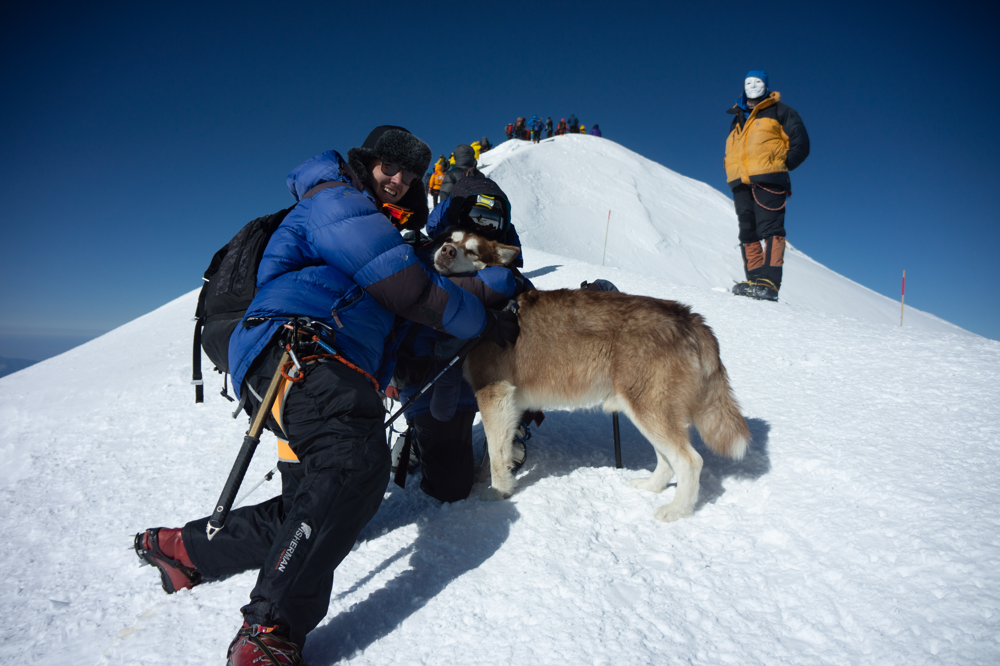
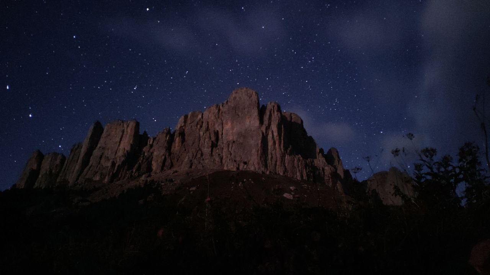

Счастье не за горами, оно в горах...

8 августа 2019 года мы поднялись на вершину Эльбруса. Отметка в 5642 м пройдена.
Завораживающие виды, такие яркие краски и эмоции, невероятный и впечатляющий своей красотой рассвет.

"Я, кажется, увеличу число счастливых идиотов на одну человекоединицу.
И это правильно: счастливых идиотов должно быть больше, чем нас,
несчастных придурков." (Макс Фрай)
Первую годовщину свадьбы отмечали в походе по Адыгее в 2021 году. Одна из стоянок была с видом на Большой
Тхач

Это невозможно! - сказала Причина.
Это безрассудство! - заметил Опыт.
Это бесполезно! - отрезала Гордость.
Попробуй - шепнула Мечта...
За последнее время мы успели:
- Подняться на вершину Эльбруса
- Сходить в поход по Крыму
- Пройти через перевал Чертовы ворота
- сплавиться на каяках по Ладоге
- Сплавиться на каяках по Вуоксе
- Сплавиться на сапах по р.Оредеж
Места, где еще хочется побывать в ближайшее время:
- Камчатка
- Алтай
- Хибины
- Грозный
- И, конечно же, повторить хинкальки в Севастополе и чебуреки в Балаклаве!
С этими ребятами мы ходим в коммерческие походы отдыхать